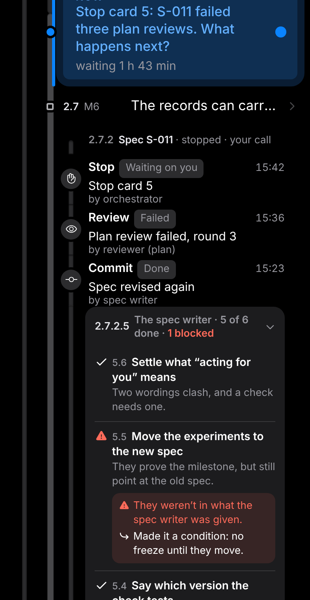

<title>Floating Branch Map</title>
<meta name="claude:viewport-fit-sides" content="cover">
<style>/* Layout: v12 first, then each option as a scrollable phone frame. Tokens follow the Desk Element Library (v12). */
:root { --ground:#f2f3f7; --surface:#ffffff; --text-1:#1c1d21; --text-2:#6b6d71; --text-3:#a4a5a9; --separator:#e7e9ed;
  --fill:#eae9ee; --groove:#dedee4; --groove-main:#c9c9ce; --main-mark:#3a3b40; --on-main:#ffffff; --glass:rgba(242,243,247,.86);
  --now:#0388ff; --now-ring:#d6ecff; --now-word:#0868bc; --sel-wash:#e8f3ff; --win:rgba(3,136,255,.10);
  --sans:-apple-system,BlinkMacSystemFont,"SF Pro Text","Inter","Segoe UI",Roboto,sans-serif; }
@media (prefers-color-scheme: dark) { :root:not([data-theme="light"]) { --ground:#000000; --surface:#1c1c1e; --text-1:#f2f2f7; --text-2:#98989f; --text-3:#636366; --separator:#38383a;
  --fill:#2c2c2e; --groove:#2c2c2e; --groove-main:#48484a; --main-mark:#d1d1d6; --on-main:#000000; --glass:rgba(0,0,0,.82); --now:#0a84ff; --now-ring:#0c2a45; --now-word:#9fd0ff; --sel-wash:#0c2a45; --win:rgba(10,132,255,.18); color-scheme:dark } }
:root[data-theme="dark"] { --ground:#000000; --surface:#1c1c1e; --text-1:#f2f2f7; --text-2:#98989f; --text-3:#636366; --separator:#38383a;
  --fill:#2c2c2e; --groove:#2c2c2e; --groove-main:#48484a; --main-mark:#d1d1d6; --on-main:#000000; --glass:rgba(0,0,0,.82); --now:#0a84ff; --now-ring:#0c2a45; --now-word:#9fd0ff; --sel-wash:#0c2a45; --win:rgba(10,132,255,.18); color-scheme:dark }
body { background:var(--ground); color:var(--text-1); font:400 17px/1.4 var(--sans);
  padding-left:max(16px, env(safe-area-inset-left, 0px)); padding-right:max(16px, env(safe-area-inset-right, 0px)); padding-block:24px 48px; }
main { max-width:1000px; margin:0 auto; display:flex; flex-direction:column; gap:36px; }
h1 { font:700 27px/1.15 var(--sans); margin:0; text-wrap:balance; }
p { margin:0; max-width:70ch; }
.lede { display:flex; flex-direction:column; gap:10px; } .lede p { color:var(--text-2); font-size:15px; }
.opt { display:flex; flex-direction:column; gap:12px; }
.hd { display:flex; flex-direction:column; gap:6px; }
.tag { font:600 13px/1 var(--sans); letter-spacing:.06em; text-transform:uppercase; color:var(--text-2); }
h2 { font:600 19px/1.25 var(--sans); margin:0; }
.hd p { font-size:15px; color:var(--text-2); }
.pair { display:grid; grid-template-columns:repeat(2, minmax(0, 393px)); gap:16px; }
figure { margin:0; display:flex; flex-direction:column; gap:6px; min-width:0; }
figure img { width:100%; height:auto; border:1px solid var(--separator); border-radius:18px; }
figcaption { font-size:13px; color:var(--text-2); }
@media (max-width: 640px) { .pair { grid-template-columns:minmax(0, 1fr); } }

/* the phone */
.phone { width:100%; max-width:393px; height:680px; border:1px solid var(--separator); border-radius:22px; background:var(--ground); overflow:hidden; }
.scr { height:100%; overflow-y:auto; overscroll-behavior:contain; position:relative; }
.list { padding:4px 16px 0; }
.endpad { height:320px; }
.mapbar { position:sticky; z-index:2; background:var(--glass); -webkit-backdrop-filter:blur(14px); backdrop-filter:blur(14px); }
.mapbar.top { top:0; border-bottom:1px solid var(--separator); padding:8px 0 2px; }
.mapbar.bot { bottom:0; border-top:1px solid var(--separator); padding:4px 0 10px; }
.grip { width:36px; height:4px; border-radius:2px; background:var(--text-3); margin:0 auto 4px; }
.mapvp { overflow:hidden; touch-action:pan-y; }
.mapbar.bot .mapvp { cursor:grab; touch-action:none; }
.mapin { will-change:transform; }
.mapin svg { display:block; }
.mapin .g { fill:none; stroke:var(--groove); stroke-width:5; stroke-linecap:round; }
.mapin .g.main { stroke:var(--groove-main); stroke-width:7; }
.mapin .dot { fill:var(--text-3); transition:r .2s, fill .2s; }
.mapin .dot.main { fill:var(--main-mark); }
.mapin .dot.vis { fill:var(--text-1); } .mapin .dot.main.vis { fill:var(--main-mark); }
.mapin .dot.now { fill:var(--now); stroke:var(--now-ring); stroke-width:3; }
.mapin .win { fill:var(--win); transition:x .45s cubic-bezier(.2,.8,.2,1), width .45s cubic-bezier(.2,.8,.2,1); }
.mapin .lb { font:600 10.5px var(--sans); fill:var(--text-2); paint-order:stroke; stroke:var(--ground); stroke-width:3px; stroke-linejoin:round; }
.mapin .lb.main { fill:var(--text-3); }
@media (prefers-reduced-motion: reduce) { .mapin .win, .mapin .dot { transition:none; } }

/* the timeline under it */
.phase { font:700 24px/30px var(--sans); padding:10px 0 6px; display:flex; align-items:baseline; gap:8px; }
.pno { color:var(--text-3); } .pnow { font:600 13px var(--sans); color:var(--now-word); }
.msh { display:flex; align-items:baseline; gap:6px; padding:12px 0 4px; border-top:1px solid var(--separator); margin-top:6px; white-space:nowrap; overflow:hidden; }
.msh .no { font-weight:600; font-variant-numeric:tabular-nums; } .msh .id { color:var(--text-2); font-size:15px; } .msh .nm { overflow:hidden; text-overflow:ellipsis; }
.why { font-size:14px; color:var(--text-2); padding:2px 0 8px; }
.sph { display:flex; align-items:center; gap:8px; font-size:13px; color:var(--text-2); padding:8px 0 2px; white-space:nowrap; overflow:hidden; }
.sph .no { font-weight:600; color:var(--text-2); font-variant-numeric:tabular-nums; } .sph b { color:var(--text-1); font-weight:600; }
.sph .lab { overflow:hidden; text-overflow:ellipsis; }
.ico { flex:none; width:26px; height:26px; border-radius:13px; background:var(--fill); color:var(--text-1); display:grid; place-items:center; }
.ico svg { width:15px; height:15px; } .ico.sm { width:22px; height:22px; } .ico.sm svg { width:13px; height:13px; }
.ico.main { background:var(--main-mark); color:var(--on-main); }
.row { display:flex; gap:10px; align-items:flex-start; padding:7px 0; }
.tx { min-width:0; flex:1; }
.l1 { display:flex; align-items:baseline; gap:6px; font-size:15px; line-height:19px; }
.l1 b { font-weight:600; } .st { font-size:13px; color:var(--text-2); }
.tm { margin-left:auto; font-size:13px; color:var(--text-2); font-variant-numeric:tabular-nums; white-space:nowrap; }
.l2 { font-size:15px; line-height:19px; white-space:nowrap; overflow:hidden; text-overflow:ellipsis; }
.l3 { font-size:13px; line-height:17px; color:var(--text-2); }
.nowcard { margin:10px 0 4px; padding:8px 12px; border-radius:12px; background:var(--sel-wash); color:var(--now-word); font-size:15px; line-height:20px; }
.nowcard span { display:block; font:600 11px/14px var(--sans); letter-spacing:.06em; text-transform:uppercase; }
</style>
<main>
<header class="lede"><h1>A branch map that floats and moves</h1>
<p>You asked for the branches at the top of the page, staying there however far you scroll, and moving with the timeline. Today, in v12, there is no map: each sprint is a lane down the left of an open milestone (the first picture). Then three ways the map could float and move, drawn with the Design phase’s real sprints. Scroll inside each phone to see the motion.</p>
<p>Two of the Design phase’s sprints overlap S-011 in time, so the map shows several branches at once. Everything stays neutral here: the gauges, their colours and how the page opens come next, one at a time.</p></header>
<section class="opt"><div class="hd"><span class="tag">Now</span><h2>v12 as it is</h2><p>Lanes down the left of the open milestone, about 112 points wide. No map.</p></div>
<div class="pair"><figure><figcaption>Light</figcaption></figure><figure><figcaption>Dark</figcaption></figure></div></section>
<section class="opt"><div class="hd"><span class="tag">Option</span><h2>A · The whole phase, panning</h2><p>The map shows every sprint in the phase, oldest on the left, and stays at the top as you scroll. A soft window marks the events you can see below, and the map slides sideways to keep them under it.</p></div><div class="phone" data-mode="a"></div></section><section class="opt"><div class="hd"><span class="tag">Option</span><h2>B · Only the milestone you are in</h2><p>The map shows only the milestone at the top of the screen. Scroll into the next one and its map pushes in from the left. Less on screen, but you see one milestone’s branches at a time.</p></div><div class="phone" data-mode="b"></div></section><section class="opt"><div class="hd"><span class="tag">Option</span><h2>C · At the bottom, and you can drag it</h2><p>As A, but the map floats at the bottom, where your thumb is. Drag it sideways and the timeline scrolls to match, so it works as a scrubber.</p></div><div class="phone" data-mode="c"></div></section>
</main>
<script>var DATA = [{"no": "2.5", "id": "Design-5", "name": "The design fits together", "sprints": [{"no": "2.5.2", "name": "Mockups v2 to v4", "label": "on a branch", "open": true, "ev": [[2336, "commit", "Done", "chief of staff", "Motion map"], [2366, "commit", "Done", "chief of staff", "v2: the desk as a trunk"], [2392, "commit", "Done", "chief of staff", "v3: the motion pass"], [2400, "commit", "Done", "chief of staff", "v3: the past shaded lighter"], [2414, "commit", "Done", "chief of staff", "v4: projects open on their plan"]]}, {"no": "2.5.1", "name": "PR #445", "label": "the first mockup, merged", "open": false, "ev": [[2165, "commit", "Done", "chief of staff", "First timeline mockup"], [2172, "check", "Done", "Actions", "Checks passed"], [2274, "merge", "Done", "you", "Merged PR #445"]]}]}, {"now": true}, {"no": "2.7", "id": "M6", "name": "The records can carry the timeline", "sprints": [{"no": "2.7.2", "name": "Spec S-011", "label": "stopped \u00b7 your call", "open": true, "ev": [[2167, "decision", "Done", "orchestrator", "New spec S-011, rounds reset"], [2176, "commit", "Done", "spec writer", "First draft"], [2189, "review", "Failed", "reviewer (plan)", "Plan review failed, round 1"], [2197, "commit", "Done", "spec writer", "Spec revised"], [2326, "merge", "Done", "you", "Merged PR #446: three questions for you"], [2354, "review", "Failed", "reviewer (plan)", "Plan review failed, round 2"], [2363, "commit", "Done", "spec writer", "Spec revised again"], [2376, "review", "Failed", "reviewer (plan)", "Plan review failed, round 3"], [2382, "stop", "Waiting on you", "orchestrator", "Stop card 5"]]}, {"no": "2.7.1", "name": "Spec S-010", "label": "superseded by S-011", "open": false, "ev": [[1292, "commit", "Done", "spec writer", "First draft, and experiments E1 and E2 registered"], [1304, "review", "Failed", "reviewer (plan)", "Plan review failed"], [1425, "commit", "Done", "spec writer", "Spec revised"], [1431, "review", "Failed", "reviewer (plan)", "Plan review failed"], [1505, "stop", "Done", "orchestrator", "Stop card 4"], [1736, "merge", "Done", "you", "Merged PR #443: the card\u2019s notes and two questions"], [1738, "decision", "Done", "you", "You said: write a new spec"], [2164, "merge", "Done", "you", "Merged PR #444: the answer, the number fix, the pack fix"]]}]}, {"no": "2.1", "id": "Design-1", "name": "Done defined in real scenarios", "why": "Reached by the spec\u2019s scenarios; no sprint on record."}]; var ICONS = {"commit": "<svg aria-hidden=\"true\" focusable=\"false\" xmlns=\"http://www.w3.org/2000/svg\" viewBox=\"0 0 256 256\" fill=\"currentColor\"><path d=\"M248,120H183.42a56,56,0,0,0-110.84,0H8a8,8,0,0,0,0,16H72.58a56,56,0,0,0,110.84,0H248a8,8,0,0,0,0-16ZM128,168a40,40,0,1,1,40-40A40,40,0,0,1,128,168Z\"/></svg>", "check": "<svg aria-hidden=\"true\" focusable=\"false\" xmlns=\"http://www.w3.org/2000/svg\" viewBox=\"0 0 256 256\" fill=\"currentColor\"><path d=\"M128,24A104,104,0,1,0,232,128,104.11,104.11,0,0,0,128,24Zm0,192a88,88,0,1,1,88-88A88.1,88.1,0,0,1,128,216Zm48.24-94.78-64-40A8,8,0,0,0,100,88v80a8,8,0,0,0,12.24,6.78l64-40a8,8,0,0,0,0-13.56ZM116,153.57V102.43L156.91,128Z\"/></svg>", "review": "<svg aria-hidden=\"true\" focusable=\"false\" xmlns=\"http://www.w3.org/2000/svg\" viewBox=\"0 0 256 256\" fill=\"currentColor\"><path d=\"M247.31,124.76c-.35-.79-8.82-19.58-27.65-38.41C194.57,61.26,162.88,48,128,48S61.43,61.26,36.34,86.35C17.51,105.18,9,124,8.69,124.76a8,8,0,0,0,0,6.5c.35.79,8.82,19.57,27.65,38.4C61.43,194.74,93.12,208,128,208s66.57-13.26,91.66-38.34c18.83-18.83,27.3-37.61,27.65-38.4A8,8,0,0,0,247.31,124.76ZM128,192c-30.78,0-57.67-11.19-79.93-33.25A133.47,133.47,0,0,1,25,128,133.33,133.33,0,0,1,48.07,97.25C70.33,75.19,97.22,64,128,64s57.67,11.19,79.93,33.25A133.46,133.46,0,0,1,231.05,128C223.84,141.46,192.43,192,128,192Zm0-112a48,48,0,1,0,48,48A48.05,48.05,0,0,0,128,80Zm0,80a32,32,0,1,1,32-32A32,32,0,0,1,128,160Z\"/></svg>", "merge": "<svg aria-hidden=\"true\" focusable=\"false\" xmlns=\"http://www.w3.org/2000/svg\" viewBox=\"0 0 256 256\" fill=\"currentColor\"><path d=\"M208,112a32.05,32.05,0,0,0-30.69,23l-42.21-6a8,8,0,0,1-4.95-2.71L94.43,84.55A32,32,0,1,0,72,87v82a32,32,0,1,0,16,0V101.63l30,35a24,24,0,0,0,14.83,8.14l44,6.28A32,32,0,1,0,208,112ZM64,56A16,16,0,1,1,80,72,16,16,0,0,1,64,56ZM96,200a16,16,0,1,1-16-16A16,16,0,0,1,96,200Zm112-40a16,16,0,1,1,16-16A16,16,0,0,1,208,160Z\"/></svg>", "decision": "<svg aria-hidden=\"true\" focusable=\"false\" xmlns=\"http://www.w3.org/2000/svg\" viewBox=\"0 0 256 256\" fill=\"currentColor\"><path d=\"M168,112a8,8,0,0,1-8,8H96a8,8,0,0,1,0-16h64A8,8,0,0,1,168,112Zm-8,24H96a8,8,0,0,0,0,16h64a8,8,0,0,0,0-16Zm72-8A104,104,0,0,1,79.12,219.82L45.07,231.17a16,16,0,0,1-20.24-20.24l11.35-34.05A104,104,0,1,1,232,128Zm-16,0A88,88,0,1,0,51.81,172.06a8,8,0,0,1,.66,6.54L40,216,77.4,203.53a7.85,7.85,0,0,1,2.53-.42,8,8,0,0,1,4,1.08A88,88,0,0,0,216,128Z\"/></svg>", "stop": "<svg aria-hidden=\"true\" focusable=\"false\" xmlns=\"http://www.w3.org/2000/svg\" viewBox=\"0 0 256 256\" fill=\"currentColor\"><path d=\"M188,88a27.75,27.75,0,0,0-12,2.71V60a28,28,0,0,0-41.36-24.6A28,28,0,0,0,80,44v6.71A27.75,27.75,0,0,0,68,48,28,28,0,0,0,40,76v76a88,88,0,0,0,176,0V116A28,28,0,0,0,188,88Zm12,64a72,72,0,0,1-144,0V76a12,12,0,0,1,24,0v44a8,8,0,0,0,16,0V44a12,12,0,0,1,24,0v68a8,8,0,0,0,16,0V60a12,12,0,0,1,24,0v68.67A48.08,48.08,0,0,0,120,176a8,8,0,0,0,16,0,32,32,0,0,1,32-32,8,8,0,0,0,8-8V116a12,12,0,0,1,24,0Z\"/></svg>", "branch": "<svg aria-hidden=\"true\" focusable=\"false\" xmlns=\"http://www.w3.org/2000/svg\" viewBox=\"0 0 256 256\" fill=\"currentColor\"><path d=\"M232,64a32,32,0,1,0-40,31v17a8,8,0,0,1-8,8H96a23.84,23.84,0,0,0-8,1.38V95a32,32,0,1,0-16,0v66a32,32,0,1,0,16,0V144a8,8,0,0,1,8-8h88a24,24,0,0,0,24-24V95A32.06,32.06,0,0,0,232,64ZM64,64A16,16,0,1,1,80,80,16,16,0,0,1,64,64ZM96,192a16,16,0,1,1-16-16A16,16,0,0,1,96,192ZM200,80a16,16,0,1,1,16-16A16,16,0,0,1,200,80Z\"/></svg>"};
(function () {
  var DX = 22, PAD = 26, YMAIN = 76, LANE = 28;
  var reduce = window.matchMedia && window.matchMedia('(prefers-reduced-motion: reduce)').matches;
  function esc(s) { return String(s).replace(/[&<>"]/g, function (c) { return { '&': '&amp;', '<': '&lt;', '>': '&gt;', '"': '&quot;' }[c]; }); }
  function hm(m) { var d = Math.floor(m / 1440), h = Math.floor(m % 1440 / 60), mi = m % 60; return (d === 0 ? '13 Nov ' : '') + (h < 10 ? '0' : '') + h + ':' + (mi < 10 ? '0' : '') + mi; }
  var KL = { commit: 'Commit', check: 'Check', review: 'Review', merge: 'Merge', decision: 'Decision', stop: 'Stop' };

  /* every event once, with its milestone and sprint */
  var ALL = [];
  DATA.forEach(function (m, mi) { (m.sprints || []).forEach(function (s, si) { s.ev.forEach(function (e, ei) {
    ALL.push({ k: ALL.length, mi: mi, si: si, t: e[0], kind: e[1], st: e[2], who: e[3], title: e[4], sp: s, ms: m, now: e[1] === 'stop' && e[2] === 'Waiting on you' });
  }); }); });

  /* a map of some events: x by time order, a lane per sprint (reused once a sprint has merged) */
  function layout(evs) {
    var order = evs.slice().sort(function (a, b) { return a.t - b.t; }), x = {};
    order.forEach(function (e, i) { x[e.k] = PAD + i * DX; });
    var sps = [], seen = {};
    evs.forEach(function (e) { var key = e.mi + ':' + e.si; if (!seen[key]) { seen[key] = { key: key, sp: e.sp, evs: [] }; sps.push(seen[key]); } seen[key].evs.push(e); });
    sps.forEach(function (s) { s.evs.sort(function (a, b) { return a.t - b.t; }); s.a = s.evs[0].t; s.b = s.evs[s.evs.length - 1].t; });
    sps.sort(function (a, b) { return a.a - b.a; });
    var busy = [];
    sps.forEach(function (s) { var l = 1; while (busy[l] && busy[l] >= s.a) l++; s.lane = l; busy[l] = s.b; });
    var lanes = Math.max.apply(null, sps.map(function (s) { return s.lane; }));
    return { x: x, sps: sps, w: PAD * 2 + (order.length - 1) * DX, h: YMAIN + 26, lanes: lanes };
  }
  function svg(L) {
    var p = '<path class="g main" d="M0 ' + YMAIN + ' H' + L.w + '"/>', dots = '', labs = '';
    L.sps.forEach(function (s) {
      var y = YMAIN - LANE * s.lane, onLane = s.evs.filter(function (e) { return e.kind !== 'merge'; });
      var x0 = L.x[s.evs[0].k], x1 = onLane.length ? L.x[onLane[onLane.length - 1].k] : x0;
      p += '<path class="g" d="M' + (x0 - 16) + ' ' + YMAIN + ' C' + (x0 - 8) + ' ' + YMAIN + ' ' + (x0 - 8) + ' ' + y + ' ' + x0 + ' ' + y + ' H' + x1 + '"/>';
      s.evs.forEach(function (e, i) {
        if (e.kind === 'merge') { var px = i ? L.x[s.evs[i - 1].k] : L.x[e.k] - 16, mx = L.x[e.k];
          p += '<path class="g" d="M' + px + ' ' + y + ' C' + (px + mx) / 2 + ' ' + y + ' ' + (px + mx) / 2 + ' ' + YMAIN + ' ' + mx + ' ' + YMAIN + '"/>'; }
        dots += '<circle class="dot' + (e.kind === 'merge' ? ' main' : '') + (e.now ? ' now' : '') + '" data-k="' + e.k + '" cx="' + L.x[e.k] + '" cy="' + (e.kind === 'merge' ? YMAIN : y) + '" r="' + (e.now ? 5 : 4) + '"/>';
      });
      labs += '<text class="lb" x="' + x0 + '" y="' + (y - 9) + '">' + esc(s.sp.no + ' ' + s.sp.name.replace('Spec ', '')) + '</text>';
    });
    return '<svg width="' + L.w + '" height="' + L.h + '" viewBox="0 0 ' + L.w + ' ' + L.h + '"><rect class="win" x="0" y="' + (YMAIN - LANE * L.lanes - 10) + '" width="0" height="' + (LANE * L.lanes + 20) + '" rx="10"/>' + p + dots + labs +
      '<text class="lb main" x="4" y="' + (YMAIN + 20) + '">main</text></svg>';
  }
  function row(e) {
    var m = e.kind === 'merge';
    return '<div class="row" data-k="' + e.k + '"><span class="ico' + (m ? ' main' : '') + '">' + ICONS[e.kind] + '</span><div class="tx"><div class="l1"><b>' + KL[e.kind] + '</b><span class="st">' + esc(e.st) +
      '</span><span class="tm">' + hm(e.t) + '</span></div><div class="l2">' + esc(e.title) + '</div><div class="l3">by ' + esc(e.who) + (m ? ' · main' : '') + '</div></div></div>';
  }
  function list() {
    var h = '<div class="phase"><span class="pno">2</span>Design<span class="pnow">now</span></div>';
    DATA.forEach(function (m, mi) {
      if (m.now) { h += '<div class="nowcard"><span>Now</span>Stop card 5: S-011 failed three plan reviews. What happens next?</div>'; return; }
      h += '<div class="msh" data-mi="' + mi + '"><span class="no">' + m.no + '</span><span class="id">' + m.id + '</span><span class="nm">' + esc(m.name) + '</span></div>';
      if (m.why) h += '<div class="why">' + esc(m.why) + '</div>';
      (m.sprints || []).forEach(function (s, si) {
        h += '<div class="sph"><span class="ico sm">' + ICONS.branch + '</span><span class="no">' + s.no + '</span><b>' + esc(s.name) + '</b><span class="lab">· ' + esc(s.label) + '</span></div>';
        ALL.filter(function (e) { return e.mi === mi && e.si === si; }).slice().reverse().forEach(function (e) { h += row(e); });
      });
    });
    return h + '<div class="endpad"></div>';
  }

  document.querySelectorAll('.phone[data-mode]').forEach(function (ph) {
    var mode = ph.dataset.mode, bottom = mode === 'c';
    ph.innerHTML = '<div class="scr">' + (bottom ? '' : '<div class="mapbar top"><div class="mapvp"><div class="mapin"></div></div></div>') + '<div class="list">' + list() + '</div>' +
      (bottom ? '<div class="mapbar bot"><div class="grip"></div><div class="mapvp"><div class="mapin"></div></div></div>' : '') + '</div>';
    var scr = ph.querySelector('.scr'), bar = ph.querySelector('.mapbar'), vp = ph.querySelector('.mapvp'), inn = ph.querySelector('.mapin');
    var L = null, cur = null, pan = 0, dragging = false;
    function draw(evs, push) {
      L = layout(evs); inn.innerHTML = svg(L);
      if (push && !reduce && inn.animate) inn.firstChild.animate([{ opacity: 0, transform: 'translateX(-28px)' }, { opacity: 1, transform: 'none' }], { duration: 300, easing: 'cubic-bezier(.2,.8,.2,1)' });
    }
    if (mode !== 'b') draw(ALL, false);
    function visible() {
      var r = scr.getBoundingClientRect(), top = r.top + (bottom ? 0 : bar.offsetHeight), bot = r.bottom - (bottom ? bar.offsetHeight : 0);
      return [].slice.call(ph.querySelectorAll('.row')).filter(function (el) { var b = el.getBoundingClientRect(); return b.bottom > top + 8 && b.top < bot - 8; }).map(function (el) { return +el.dataset.k; });
    }
    function currentMs(vis) { return vis.length ? ALL[vis[0]].mi : 0; }
    function setPan(v, animate) {
      var max = Math.max(0, L.w - vp.clientWidth); pan = Math.max(0, Math.min(max, v));
      inn.style.transition = animate && !reduce ? 'transform .45s cubic-bezier(.2,.8,.2,1)' : 'none';
      inn.style.transform = 'translateX(' + (-pan) + 'px)';
    }
    function sync() {
      var vis = visible();
      if (mode === 'b') { var mi = currentMs(vis); if (mi !== cur) { cur = mi; draw(ALL.filter(function (e) { return e.mi === mi; }), true); } }
      var on = {}; vis.forEach(function (k) { on[k] = 1; });
      var xs = vis.map(function (k) { return L.x[k]; }).filter(function (x) { return x !== undefined; });
      inn.querySelectorAll('.dot').forEach(function (d) { d.classList.toggle('vis', !!on[d.dataset.k]); });
      var win = inn.querySelector('.win');
      if (xs.length) { var a = Math.min.apply(null, xs) - 10, b = Math.max.apply(null, xs) + 10; win.setAttribute('x', a); win.setAttribute('width', b - a);
        if (!dragging) setPan((a + b) / 2 - vp.clientWidth / 2, true); }
    }
    var raf = 0; scr.addEventListener('scroll', function () { if (!raf) raf = requestAnimationFrame(function () { raf = 0; sync(); }); });
    /* C: drag the map sideways and the timeline follows */
    if (bottom) {
      var sx = 0, sp = 0;
      vp.addEventListener('pointerdown', function (e) { dragging = true; sx = e.clientX; sp = pan; vp.setPointerCapture(e.pointerId); });
      vp.addEventListener('pointermove', function (e) {
        if (!dragging) return; setPan(sp - (e.clientX - sx), false);
        var cx = pan + vp.clientWidth / 2, best = null, bd = 1e9;
        Object.keys(L.x).forEach(function (k) { var d = Math.abs(L.x[k] - cx); if (d < bd) { bd = d; best = k; } });
        var el = ph.querySelector('.row[data-k="' + best + '"]'); if (el) scr.scrollTop = el.offsetTop - scr.clientHeight / 2 + el.offsetHeight / 2;
      });
      ['pointerup', 'pointercancel'].forEach(function (n) { vp.addEventListener(n, function () { dragging = false; }); });
    }
    /* start on Now: S-011's newest event under the map */
    var start = ph.querySelector('.nowcard'); scr.scrollTop = start.offsetTop - (bottom ? 8 : bar.offsetHeight + 8);
    sync();
  });
})();
</script>